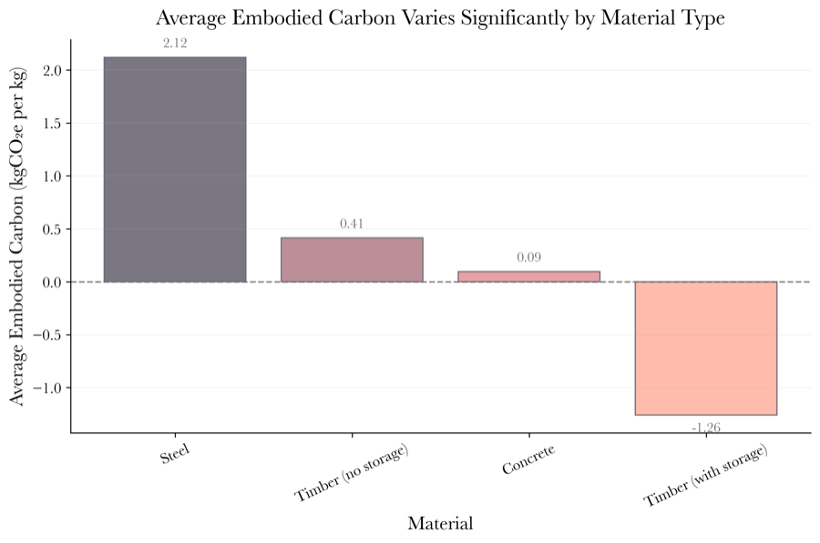
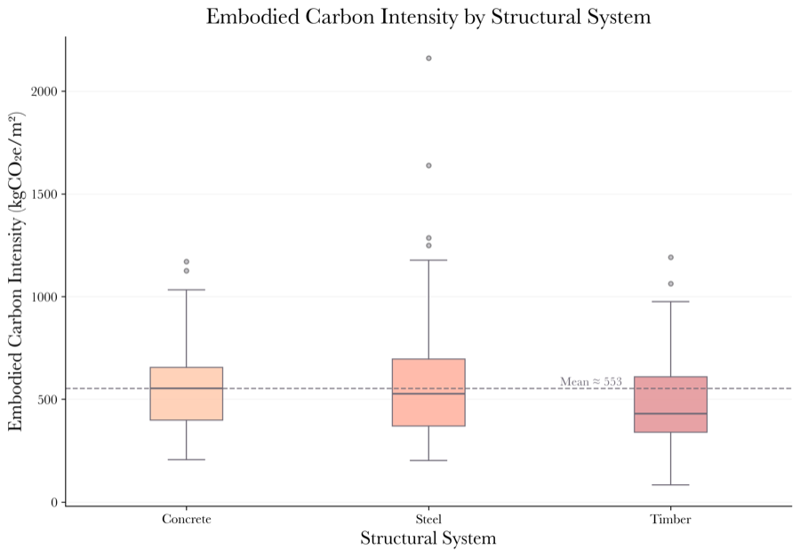
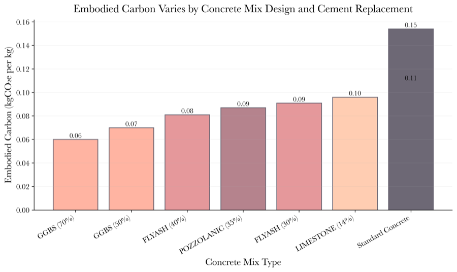
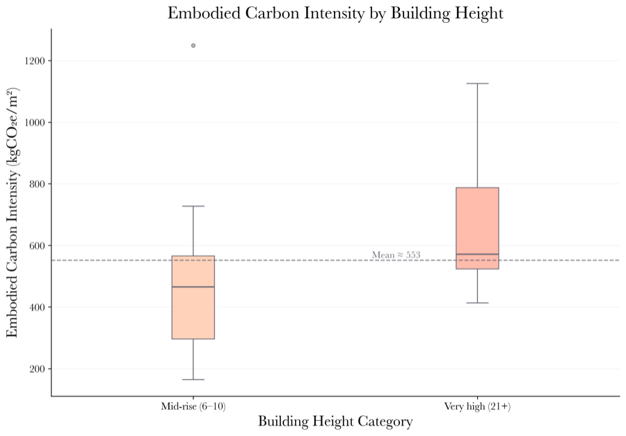
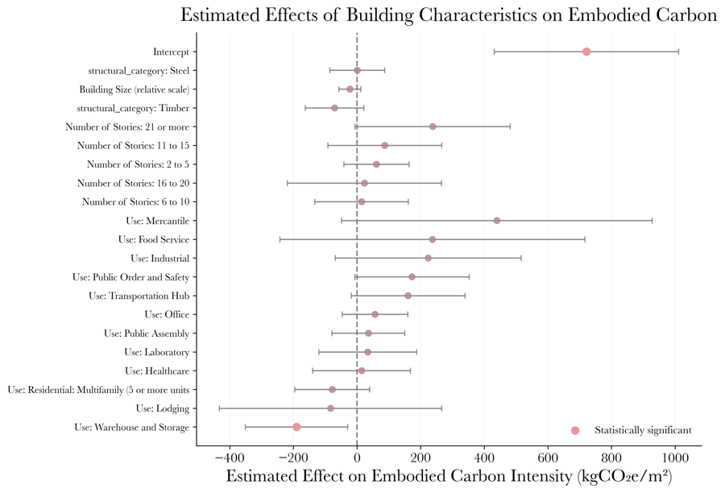

What Drives Embodied Carbon?
The modeling revealed significant variation in embodied carbon intensity across building types, structural systems, and material choices. Click any chart to expand and read the findings.

Materials Comparison
Embodied carbon varies dramatically by material. Steel and concrete dominate emissions, but the specific mix matters — low-carbon concrete substitutes can reduce material-level emissions by 30-40% without compromising structural performance.

Feature Importance
Random Forest analysis reveals which building characteristics most influence embodied carbon intensity. Floor area and structural system dominate, suggesting that design-phase decisions have the greatest impact on lifecycle emissions.

Structural System Impact
Structural system choice is one of the strongest predictors of total embodied carbon. Steel-frame buildings consistently show higher ECI than concrete or hybrid systems, moderated by building height and floor area.

Concrete Mix Design
Small changes in cement content produce outsized carbon reductions. Blends using fly ash, slag, and supplementary cementitious materials represent the single highest-leverage intervention identified in the analysis.

Height vs. Carbon
Embodied carbon intensity increases non-linearly with building height. Taller buildings require more structural material per square foot, but the relationship plateaus above ~30 stories.

Regression Coefficients
OLS regression coefficients quantify the marginal effect of each building characteristic on embodied carbon. The model identifies which variables have statistically significant relationships with carbon intensity, controlling for all other factors.